TL;DR Learn what the task is from offline data, then learn how to do it online. HiPO infers the task's automaton passively with RPNI from logged successes and failures, so it needs no environment queries to discover the task, and then plans on the product of the environment and the learned automaton.
Abstract
Planning in non-Markovian environments often requires inferring task structures, such as reward machines, through interactions with the environment. Traditional active grammatical inference methods, like Angluin's L* algorithm, depend on continuous querying to learn task structures for the underlying planning objectives. In contrast, we propose a hybrid approach that combines passive grammatical inference, using the Regular Positive and Negative Inference (RPNI) algorithm, with online planning. By leveraging pre-collected positive and negative trajectories, RPNI learns a deterministic finite automaton (DFA) that captures the task structure, significantly reducing the need for real-time interactions. Subsequently, online planning is conducted over the product MDP, which integrates the environment with the learned DFA. This hybrid methodology minimizes the cost of online interactions and improves learning efficiency in complex environments. Our approach outperforms baseline algorithms in terms of runtime and sample complexity, and is well-suited for real-world scenarios where task structures are implicit, and interactions with the environment are expensive.
How it works
In a non-Markovian task the reward depends on the history, not only on the current state: in "get coffee, then the mail, then go to the office", standing in the office pays off only if the coffee and the mail were collected first, in that order. Representing the task as a deterministic finite automaton (DFA) makes it Markovian again, but the automaton is usually unknown, and active learners such as L* discover it by querying the environment over and over.
- Offline automaton learning. Logged trajectories are turned into label sequences (e.g.
coffee mail office) and split into successes and failures. RPNI builds a prefix-tree acceptor from the successes and merges states as long as every failure stays rejected. - Product MDP. The environment and the learned DFA are combined: (s, q) → (s′, δ(q, L(s′))), so the state now records which sub-goals are done.
- Online planning. Q-learning on the product MDP learns the policy; advancing the automaton is rewarded, so the learned task structure guides exploration.
Environments
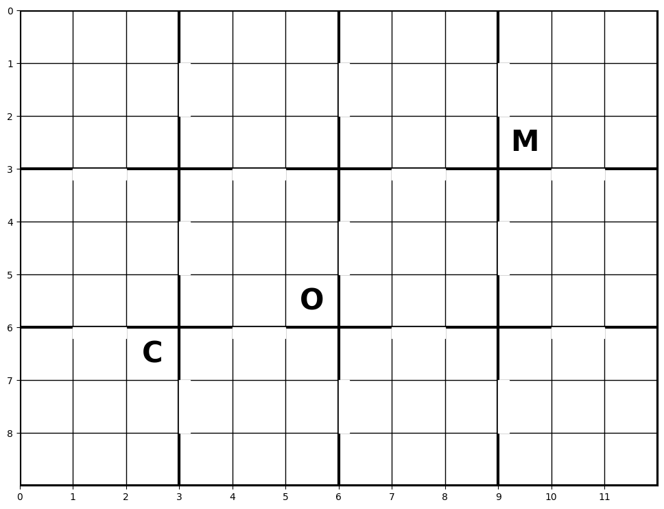
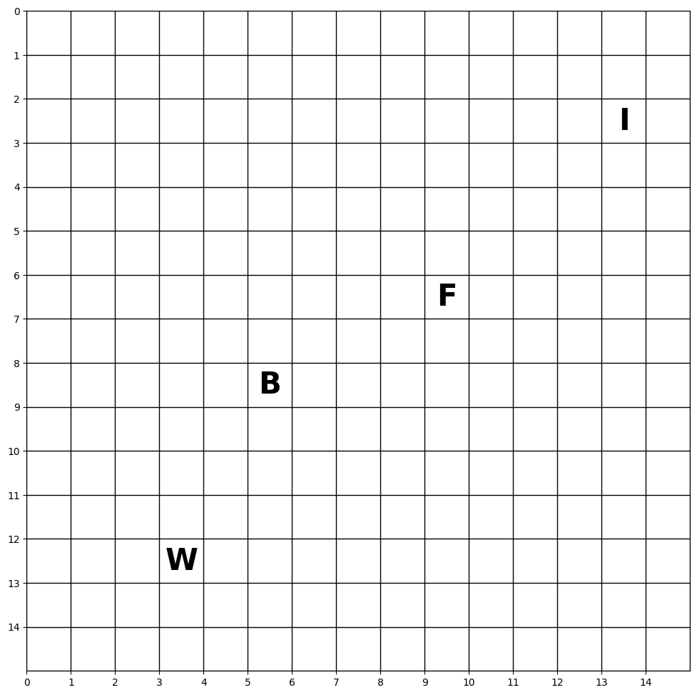
Results
Much faster than active automaton learning
Active baselines (AGI / L*, JIRP, AFRAI) query the environment to learn the automaton and need tens of seconds to reach maximum reward; HiPO gets there in a fraction of a second.
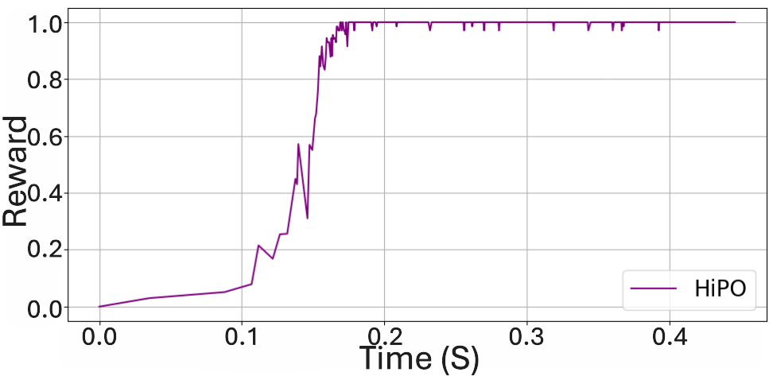
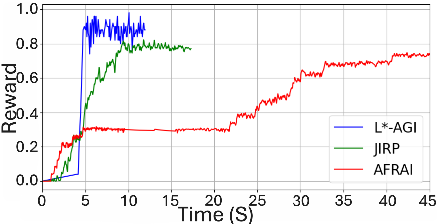
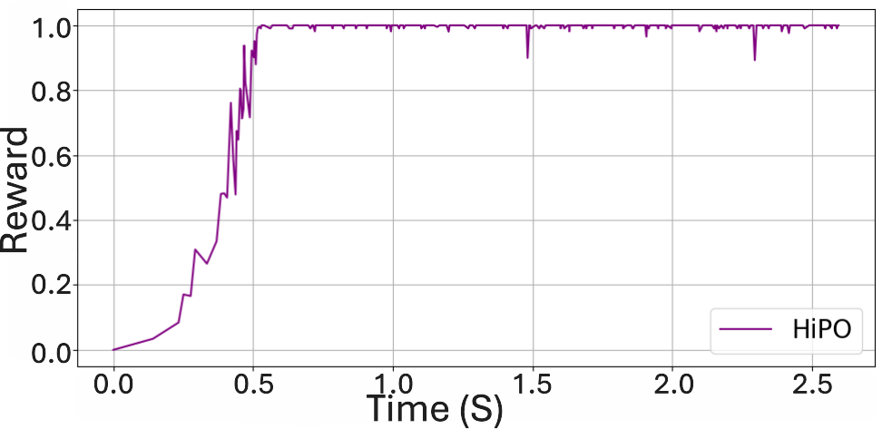
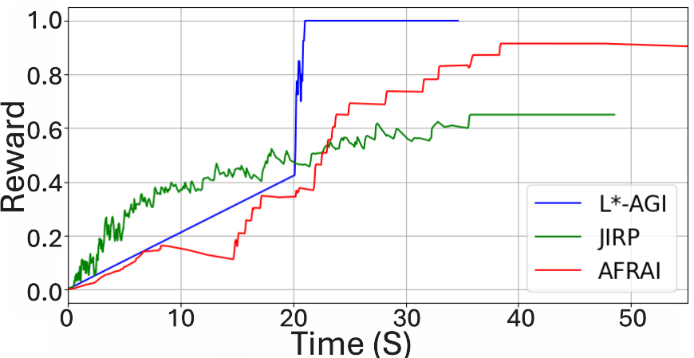
Fewer episodes than an augmented state space
QAS gives Q-learning one "visited" bit per sub-goal instead of an automaton. HiPO converges in far fewer episodes.
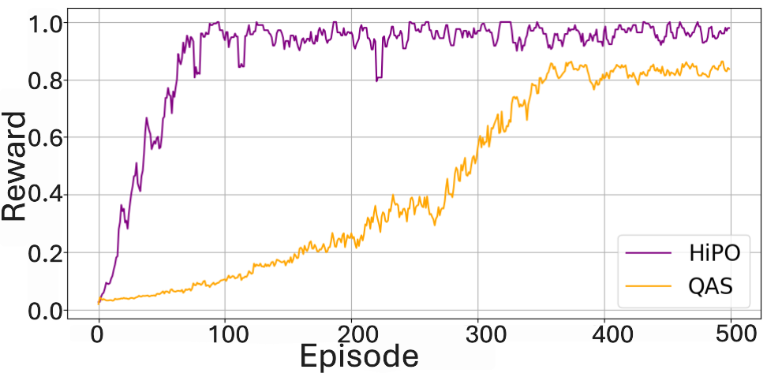
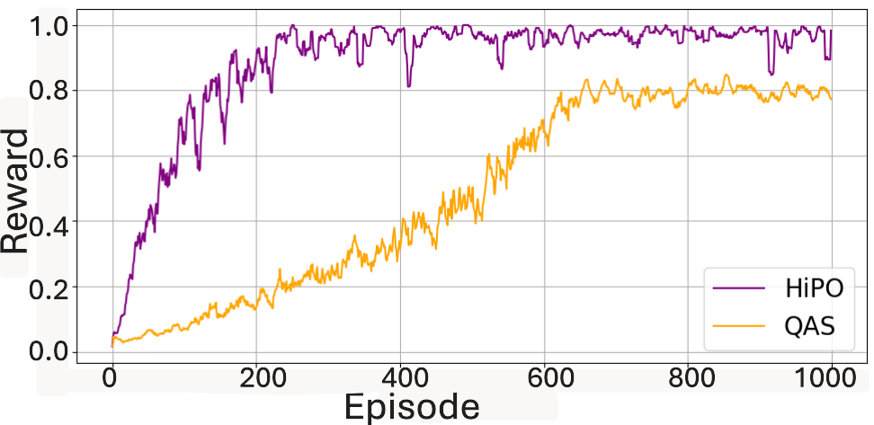
Reproduced with the open-source code (5 seeds)
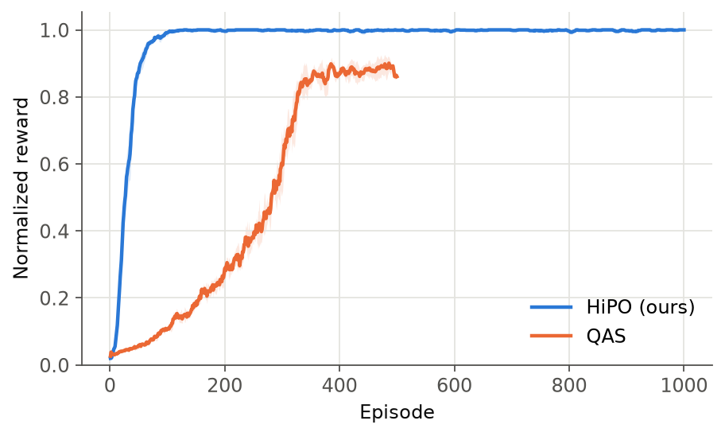
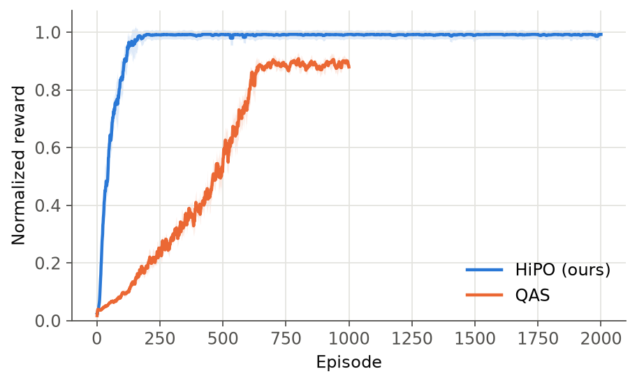
| Environment | Method | Episodes to converge (median) | Final normalized reward | Training time |
|---|---|---|---|---|
| Office | HiPO | 73 | 1.00 | 0.09 s |
| Office | QAS | not within 500 | 0.88 | 0.29 s |
| Minecraft | HiPO | 132 | 0.99 | 0.24 s |
| Minecraft | QAS | not within 1000 | 0.89 | 0.57 s |
Normalized reward = optimal steps / episode steps for successful episodes (1.0 = shortest path), 0 otherwise. Converged = 20-episode moving average ≥ 0.95.
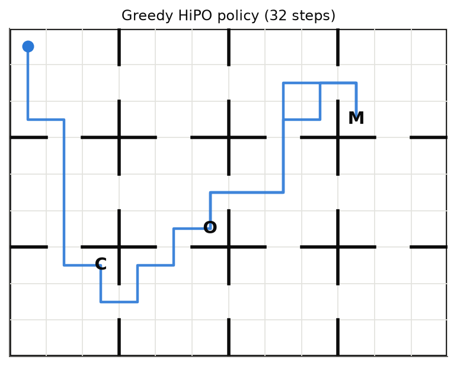
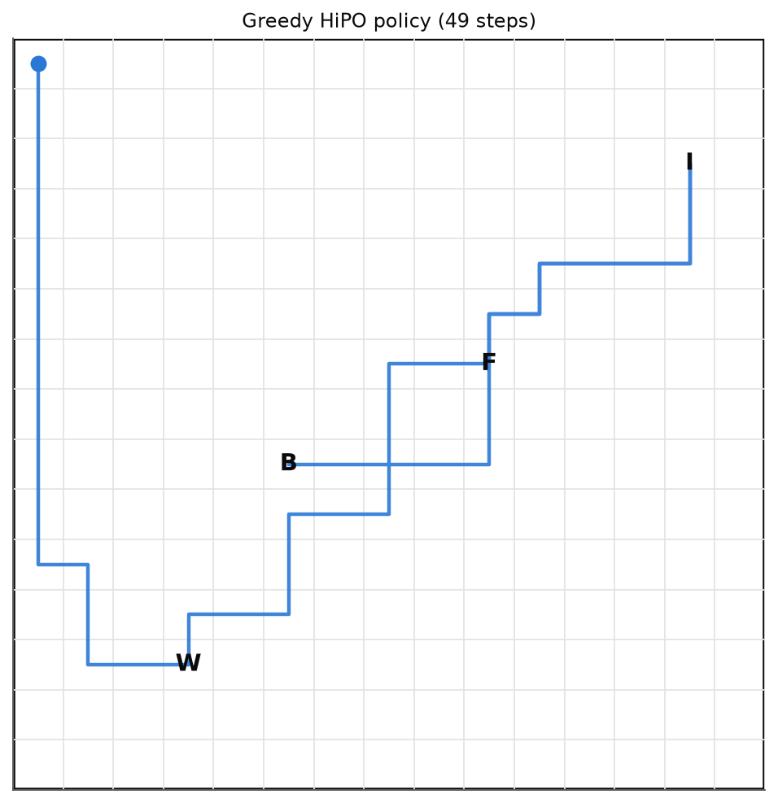
Poster
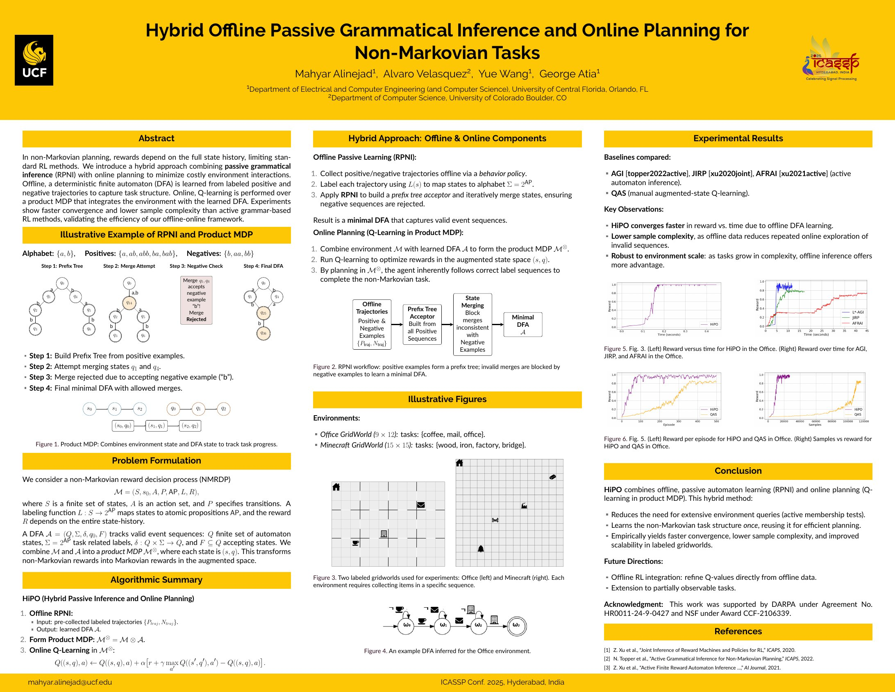
Try it
git clone https://github.com/mahyar333/HiPO.git && cd HiPO
pip install -e ".[dev]"
python -m hipo.run --config configs/office.yaml # learn the DFA, then plan
python -m hipo.plot results/office # figuresPython 3.9+, MIT license. See the repository for the full documentation.
BibTeX
@inproceedings{alinejad2025hipo,
title = {Hybrid Offline Passive Grammatical Inference and Online Planning for Non-Markovian Tasks},
author = {Alinejad, Mahyar and Velasquez, Alvaro and Wang, Yue and Atia, George},
booktitle = {IEEE International Conference on Acoustics, Speech and Signal Processing (ICASSP)},
year = {2025},
url = {https://ieeexplore.ieee.org/document/10889467}
}